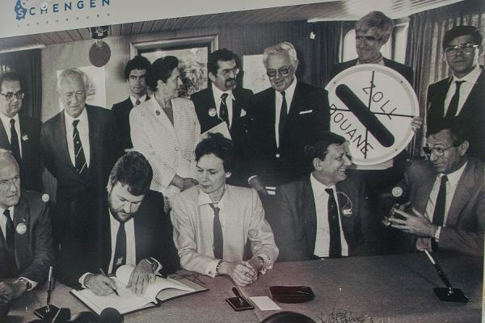

EUROPEAN NATIONS TO IMPLEMENT UNIFIED IMMIGRATION SYSTEM
Interior Ministers of European countries reach a historic agreement to streamline border controls and migration policies.

Above: Leaders gathered at the Brussels summit to finalize the agreement.
The proposed system aims to create a more cohesive approach to handling immigration across the continent.
New regulations will strictly monitor travelers arriving from non-European regions to ensure security.
While some nations expressed concerns regarding sovereignty, the majority voted in favor of the collective safety measures.
Officials stated that the implementation phase would begin within the next fiscal quarter.
This move is expected to significantly reduce illegal crossings while facilitating smoother travel for documented citizens.
Critics, however, warn that the plan could lead to increased bureaucratic hurdles for legitimate asylum seekers.